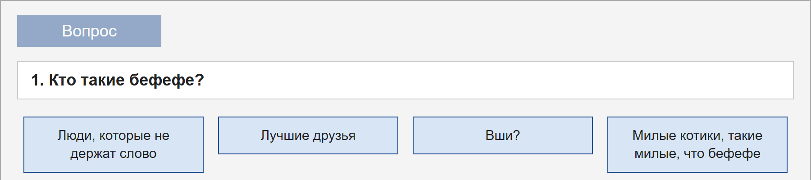
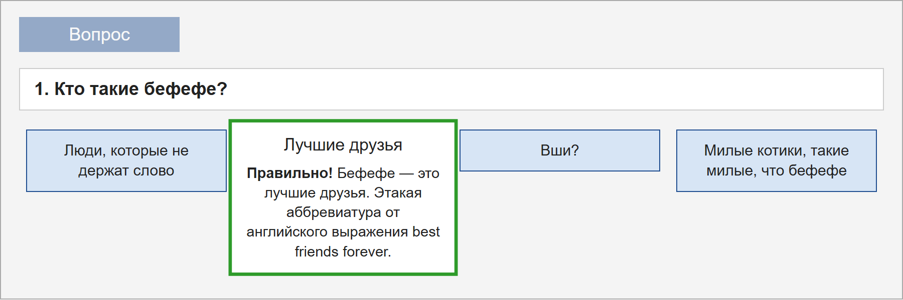
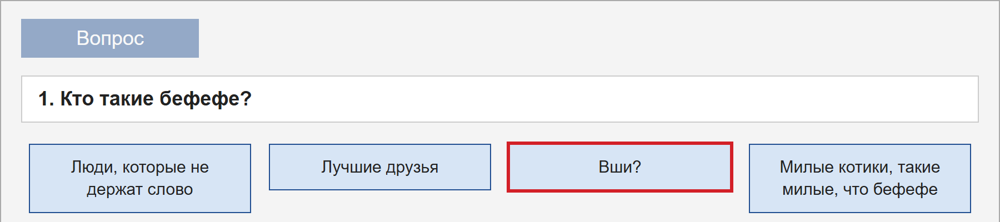

Лабораторные
6. DOM-тест «Слэнг»
Вариант 1
Что нужно было сделать
В этой работе нужно было написать тест на JavaScript, в котором все вопросы и ответы добавляются на страницу через DOM. В HTML лежит только кнопка «Вопрос» и пустые блоки. Тема теста по варианту - современный слэнг, всего в нем пять вопросов.
Как работает тест:
- по нажатию на кнопку появляется случайный вопрос и четыре ответа в случайном порядке;
- пока не выбран ответ, следующий вопрос взять нельзя;
- при правильном ответе блок увеличивается и показывает пояснение, остальные блоки по очереди уезжают вправо;
- при неправильном ответе вправо уезжают все блоки;
- рядом с вопросом появляется зеленая галочка или красный крестик;
- в конце выводится надпись «Вопросы закончились» и число правильных ответов;
- после окончания можно нажать на любой вопрос и посмотреть правильный ответ.

Как это сделано
Данные
Все вопросы лежат в одном массиве объектов. У каждого вопроса есть текст и массив ответов, а у правильного ответа дополнительно стоит correct: true и есть пояснение. Благодаря этому новый вопрос легко добавить, не меняя остальной код.
Случайный порядок
Для перемешивания написана отдельная функция. Она используется и для вопросов, и для ответов, и возвращает новый массив, поэтому исходные данные не портятся:
function shuffle(arr) {
const result = arr.slice();
for (let i = result.length - 1; i > 0; i--) {
const j = Math.floor(Math.random() * (i + 1));
[result[i], result[j]] = [result[j], result[i]];
}
return result;
}Выбор ответа

Каждый блок ответа создается через document.createElement, и на него сразу вешается обработчик нажатия. После выбора ответа ряду добавляется класс locked, поэтому нажать второй раз уже нельзя.
Вид блоков меняется только через классы. Скрипт добавляет класс correct или wrong, а все остальное описано в CSS: увеличение, цвет рамки и плавность движения.
Анимация по очереди

Больше всего времени заняла последовательность анимаций. Функция slideAway с помощью setTimeout по очереди добавляет блокам класс gone, с которым они уезжают вправо. Она возвращает момент, когда уехал последний блок, и по нему запускается следующий шаг. Так скрипт всегда знает, когда можно показать значок и включить кнопку.
Результат

Когда вопросы заканчиваются, кнопка остается выключенной и показывается статистика. Если нажать на вопрос, под ним откроется блок с правильным ответом и пояснением. Повторное нажатие закрывает его, а при открытии другого вопроса предыдущий блок тоже закрывается.
Рядом с каждым вопросом остается зеленая галочка или красный крестик, поэтому сразу видно, где была ошибка. Чтобы проверить весь сценарий, тест приходится проходить несколько раз, потому что порядок вопросов и ответов каждый раз другой. Для этого полезно отвечать то правильно, то неправильно и смотреть, совпадает ли итоговое число со значками рядом с вопросами.
Вывод
В этой работе удалось на практике разобраться с созданием элементов из скрипта, обработкой событий и классами. Также стало понятно, что логику лучше держать в JavaScript, а внешний вид в CSS. Скрипт работы лежит в файле js/dom-test.js, а стили в файле css/dom-test.css.